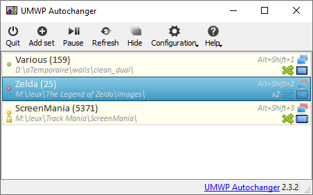
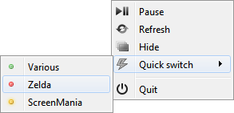
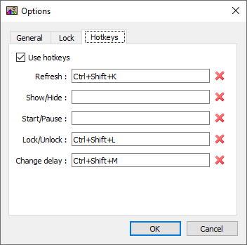
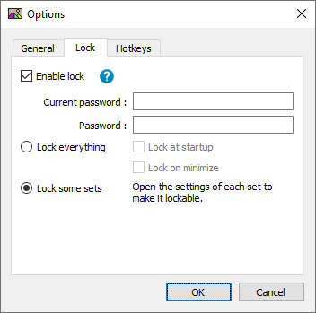

UMWP Autochanger is a little tool for multi-monitors Windows users.
Random
Randomly and periodically change the wallpaper of all your monitors.
Folders
Manage sets of wallpapers, allowing you to quickly change which images are used.
Shortcuts
Change current wallpaper with your keyboard without stopping what you are doing.
Patchwork
Generate unique patchworks with your own photos.
Password
Prevent unwanted eyes to see your photos by setting a password to some folders.
Install UMWP Autochanger
Install & launch UMWP Autochanger
Download the installation package with the link above and install it like any software.Add your first set
Click on the Add set button and select a folder containing image files.Apply
Click on the Refresh button, the wallpaper will randomly change every 60 seconds.Configuration
Read the documentation to learn about all the awesome features of UMWP Autochanger.Documentation
Presentation
The core concept of UMWP Autochanger is sets. Basically sets are folders on your computer where the tool will search for JPEG/PNG/BMP/GIF files up to 3 levels deep.
Once configured the tool will choose a random set among all activated set, then choose one image file for each monitor. Finally the final wallpaper is built with these files and sended to Windows desktop manager.
The wallpaper is updated periodically, by default every 60 seconds (configurable).
Configuration
In Configuration ‣ Options menu you can configure the update delay, the shortcuts and some other options.
Additionally you can export and import the configuration as a XML file, usefull if you plan the reset your system !

Continue reading
Add, delete, enable & disable
To add a set just click on the menu button, or right-click in the list and click , an explorer window will open to allow you to choose a folder.
To delete a set, right-click on it and click on .
To enable/disable a set, right-click on it and click on or . Active sets are marked with a icon and inactive sets are marked with a icon, current sets are marked with icon.
Configure
Right-click on a set and click on to edit it's properties, you can change the name, style, type, mode, hotkey and lock (see dedicated section) as well as on which monitors this set is visible.
You can edit several sets together by selecting them before right-click. In this mode, names and shortcuts can't be edited.
There are two types available:
- Monitor: a different image is used for each monitor
- Desktop: only one image is used for all monitors
There are six styles available:
- Center
- Tile
- Stretch
- Strecth proportional
- Fill
- Custom (see dedicated section)
There are two modes available:
- Random: files are chosen randomly in the set
- Sequential: files are chosen sequentially in alphabetical order
And finally you can check "Recent first" to give priority to newly added files.

Continue reading
Hotkeys
As we already seen, sets state can be changed in the main window. UMWP Autochanger also provides two mechanisms to quickly change the active set.
The first one is the Quick change menu available when you right-click on the system tray icon.
The second one are the keyboard shortcuts. Shortcuts are keys combinations you assign to specific sets or actions.
First of all you have to activate the feature in the main Options window, you can also configure Refresh, Hide/Show and Start/Pause shortcuts in this window.
The sets shortcuts are configured in their respective properties window. Many sets can have the same shortcut, thus they will be activated together, but actions shortcuts must be unique.
Warning: shortcuts are registered globally on the operating system, that means they can cause interferences with other softwares, so make sure the shortcuts you choose are not already used.
Lock
The password lock can be used to prevent unwanted modification of the configuration and activation of sets.
The lock has two modes:
- Lock everything: when locked, nothing can be done in the application without entering the password. The sets list is blurred out.
- Lock sets: only some specific sets require the password in order to be activated.
In both modes, the password is always requested to enter the options.
Continue reading
The Custom style can be used to generate more or less random patchwork wallpapers. You can choose the size of the grid, the prefered range of tiles size and the color and size of the border and the shadow.
This mode also has a special Per folder mode (only available in random mode) in which all tiles are choose inside a single sub-folder of the set.

They use UMWP Autochanger
« Ultimate Monitor Wallpaper Autochanger is the perfect little software if you want to loose countless hours in configuration for a pointless feature. I mean, come on ! Who looks at his wallpaper all day long anyway ? You'd better take five minutes choosing a nice photo and leave it there for twenty years. »
« Gghagg gagh gaggh ggahg gaggh !! »
« If Mistic didn't created Ultimate Monitor Wallpaper Autochanger, I would had to do it myself. »
Got a question or a suggestion ?
Heads up to the Github issues tracker and we will try to find a solution.